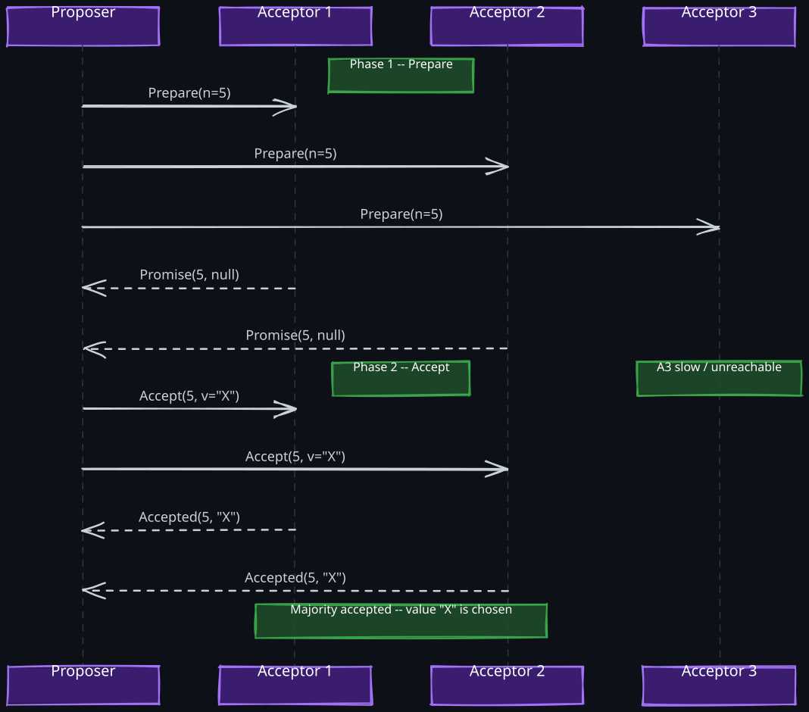
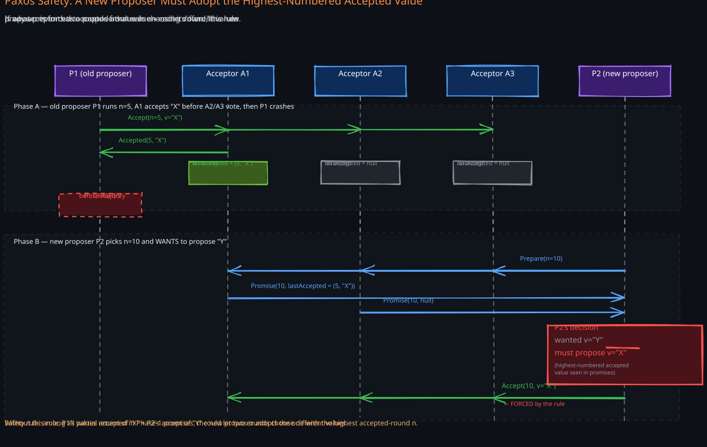
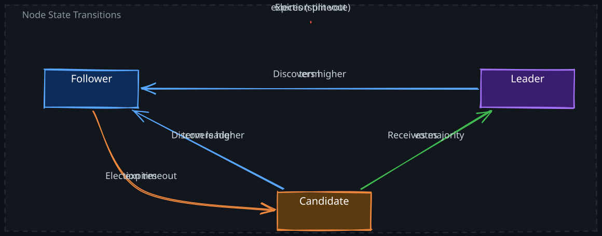
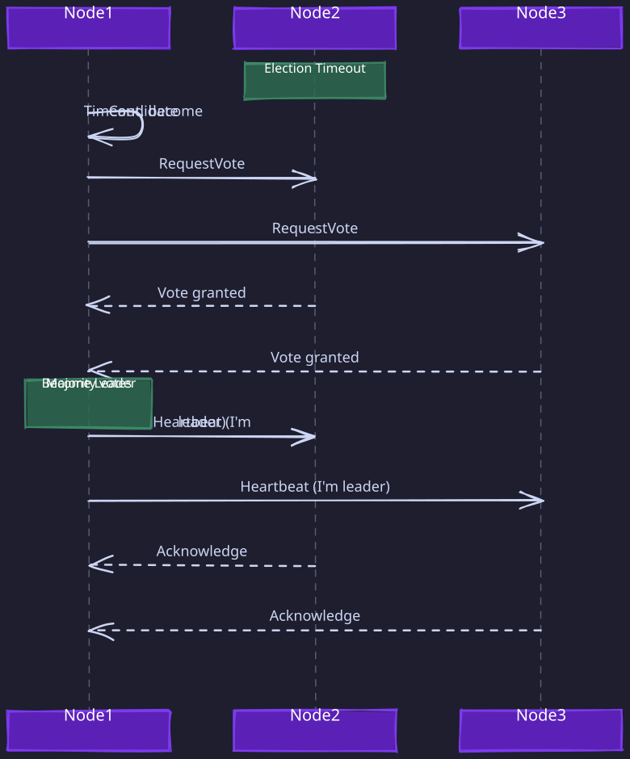
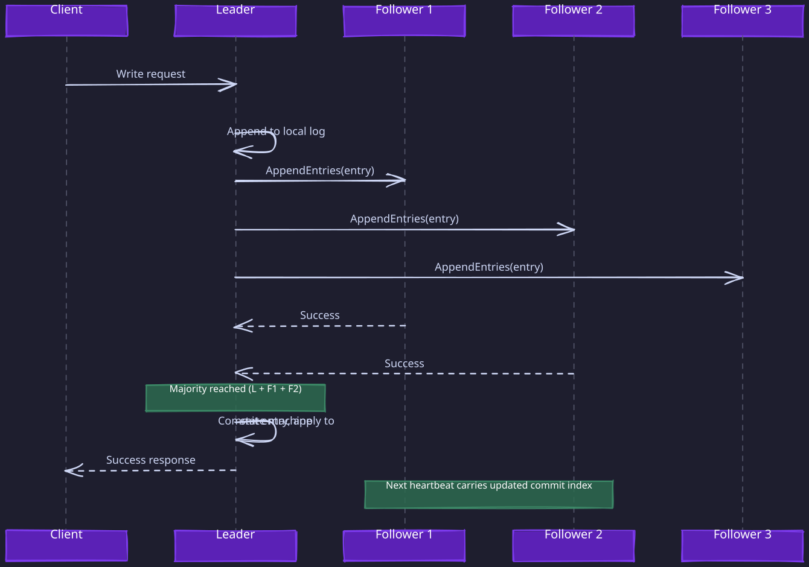

The Story
Lamport submitted the Paxos paper in 1990 using an elaborate allegory about a fictional Greek parliament on the island of Paxos, where legislators kept wandering in and out of the chamber. Reviewers told him to drop the story and just write it normally. He refused — for eight years — out of spite, because he believed the computer science community couldn’t appreciate elegance. When he finally relented with “Paxos Made Simple” in 2001, the opening line was: “The Paxos algorithm, when presented in plain English, is very simple.” Passive-aggression as a literary form.
1. Why Consensus Exists
The fundamental challenge in distributed systems is getting multiple machines to act as one coherent system. A single database on one machine has no coordination problem — it is the sole authority on what the current state is. The moment you replicate data across multiple nodes for fault tolerance or scalability, you face an unavoidable question: when these nodes disagree (due to crashes, network delays, or partitions), which node’s view of reality is correct?
Related Topics: 02-Zookeeper, 04-Distributed-Lock, 05-Distributed-Transactions, 02-CAP-and-PACELC, 06-Gossip-Protocol, 05-Isolation-Levels
Consensus is the formal answer to this question. It is a protocol by which a group of nodes agrees on a single value (or a sequence of values) such that:
- Agreement — all non-faulty nodes decide the same value
- Validity — the decided value was actually proposed by some node (not fabricated)
- Termination — every non-faulty node eventually decides (liveness)
- Integrity — each node decides at most once
These four properties sound simple. The deep difficulty is that you must maintain agreement and validity even when nodes crash and messages are lost, while also making progress (termination). This tension between safety and liveness is the core of why consensus is hard.
Where Consensus Appears in Practice
You rarely implement consensus directly. Instead, you use systems built on consensus protocols:
| Use Case | System | Underlying Protocol |
|---|---|---|
| Configuration / service discovery | etcd, ZooKeeper, Consul | Raft, ZAB |
| Distributed locking | Chubby, etcd | Paxos, Raft |
| Leader election | Kubernetes control plane | Raft (via etcd) |
| Replicated state machines | CockroachDB, TiKV, Spanner | Raft, Paxos |
| Metadata management | Kafka (KRaft mode) | Raft |
Every time you see “replicated log” or “replicated state machine,” consensus is doing the heavy lifting underneath.
2. Why Consensus is Hard: The FLP Impossibility
Before diving into algorithms, you need to understand the theoretical limit that shapes every consensus protocol.
In 1985, Fischer, Lynch, and Paterson proved that no deterministic consensus algorithm can guarantee termination in an asynchronous system where even one node can crash. This is the FLP impossibility result.
The intuition is straightforward. In a fully asynchronous network, you cannot distinguish between a node that has crashed and a node that is merely slow. Any protocol that waits for a response from a potentially crashed node might wait forever (violating termination). But any protocol that proceeds without hearing from that node might proceed incorrectly if the node is actually alive and has a different view (violating agreement).
What this means in practice: every real consensus algorithm circumvents FLP by weakening one assumption:
- Paxos and Raft use timeouts to detect failures, which technically makes the system partially synchronous. They guarantee safety always, but liveness only when the network behaves “well enough” (messages are delivered within some bound, a stable leader exists).
- This means that under severe network partitions or message delays, the system might stall (no progress) but will never produce inconsistent results. Safety is unconditional; liveness is conditional.
This is the most important insight for staff-level understanding: consensus algorithms do not solve an impossible problem. They redefine the problem boundary to make it solvable, accepting that the system may temporarily stall rather than produce wrong answers.
3. Naive Approaches and Why They Fail
1. Designated Leader (No Election)
Pick one node as the permanent leader. All decisions flow through it.
Why it fails: if the leader crashes, the entire system halts. You need a way to choose a new leader, but choosing a new leader is itself a consensus problem. You have a chicken-and-egg situation.
2. Majority Vote on Each Request
For every decision, have all nodes vote and take the majority.
Why it fails: consider two concurrent proposals. Node A proposes value X and gets votes from nodes {1, 2, 3}. Simultaneously, node B proposes value Y and gets votes from nodes {3, 4, 5}. Node 3 voted for both. Now you have two “majorities” that decided different values. Without ordering proposals (which requires… consensus), simple voting breaks.
3. Two-Phase Commit (2PC)
Use a coordinator that first asks all nodes to prepare, then tells them to commit.
Why it fails: if the coordinator crashes after sending “prepare” but before sending “commit,” all participants are stuck holding locks, unable to proceed. 2PC is a consensus protocol for the case where all nodes must agree, and it blocks when the coordinator fails. True consensus algorithms tolerate minority failures by using majority quorums.
The key insight that makes consensus algorithms work is numbered proposals combined with majority quorums. By requiring a majority (not unanimity) and by ordering proposals with monotonically increasing numbers, the algorithms ensure that any two successful quorums overlap, preventing conflicting decisions.
4. Paxos
Paxos, invented by Leslie Lamport, is the foundational consensus algorithm. Every other consensus protocol is either a variant of Paxos or was designed in reaction to it. Understanding Paxos deeply is essential even if you never implement it directly.
1. The Mental Model
Think of Paxos as a voting protocol with a twist: before you can propose a value for a vote, you must first win the right to propose by convincing a majority that your proposal number is the highest they have seen. This two-phase structure (first win the right, then propose the value) is what prevents conflicting decisions.
2. Roles
Paxos defines three logical roles (a single physical node often plays multiple roles):
- Proposer — initiates consensus by proposing a value with a unique proposal number
- Acceptor — votes on proposals and durably records its votes (the “memory” of the system)
- Learner — observes the outcome and acts on it (does not participate in voting)
3. Single-Decree Paxos (Basic Paxos)
Single-decree Paxos decides on exactly one value. It proceeds in two phases.
Phase 1: Prepare
- A proposer selects a globally unique proposal number
n(higher than any it has used before) and sendsPrepare(n)to a majority of acceptors. - Each acceptor that receives
Prepare(n):- If
nis higher than any proposal number it has previously promised, it promises not to accept any future proposal with a number less thann. It replies withPromise(n, accepted_value)whereaccepted_valueis the value from the highest-numbered proposal it has already accepted (or null if it has accepted nothing). - If
nis not higher, the acceptor ignores the message (or sends a rejection).
- If
Phase 2: Accept
-
If the proposer receives promises from a majority of acceptors:
- It examines the responses. If any acceptor reported a previously accepted value, the proposer must use the value from the highest-numbered accepted proposal. This is the critical rule that ensures safety.
- If no acceptor reported an accepted value, the proposer is free to choose any value.
- It sends
Accept(n, v)to the acceptors.
-
Each acceptor that receives
Accept(n, v):- If it has not promised to a proposal number higher than
n, it accepts the proposal and durably records(n, v). - Otherwise, it rejects.
- If it has not promised to a proposal number higher than
-
Once a majority of acceptors have accepted
(n, v), the valuevis chosen. Learners are notified.

4. Why the “Adopt Previously Accepted Value” Rule is Essential
This rule is the heart of Paxos safety. Without it, the algorithm breaks.
Scenario without the rule: Acceptors {A1, A2, A3}. Proposer P1 runs Paxos with proposal 5 and value “X”. A1 and A2 accept (5, “X”) — value “X” is now chosen. Later, proposer P2 runs Paxos with proposal 6. P2 contacts A2 and A3. A2 reports it accepted (5, “X”). If P2 could ignore this and propose its own value “Y”, then A2 and A3 might accept (6, “Y”). Now A1 thinks “X” is chosen, A2 accepted both, and A3 thinks “Y” is chosen. The system is inconsistent.
With the rule: P2 sees that A2 already accepted (5, “X”), so P2 must propose “X” with its higher number 6. Even though P2 wanted “Y”, it proposes “X”. This ensures the already-chosen value is never overridden.

5. The Dueling Proposers Problem (Livelock)
Paxos has a subtle liveness issue. Two proposers can endlessly preempt each other:
- Proposer P1 sends
Prepare(1), gets a majority of promises. - Before P1 can send
Accept(1, v), proposer P2 sendsPrepare(2). Acceptors promise to P2 and will now reject P1’s accept. - P1 retries with
Prepare(3), preempting P2. - P2 retries with
Prepare(4), preempting P1. - This continues indefinitely — neither proposer ever completes phase 2.
This is not a safety violation (no wrong value is chosen) but a liveness violation (no value is ever chosen). This is exactly the FLP impossibility manifesting in practice.
The fix: elect a single distinguished proposer (a leader). If only one proposer is active, there is no contention, and phase 2 always succeeds. This insight leads directly to Multi-Paxos.
6. Multi-Paxos
Basic Paxos decides a single value. Real systems need to agree on a sequence of values (a replicated log). Multi-Paxos extends single-decree Paxos to decide a series of values efficiently.
The key optimization: once a leader has been established via phase 1, it can skip phase 1 for subsequent proposals and jump directly to phase 2. This amortizes the cost of leader election across many consensus decisions, reducing the per-decision cost from 2 round trips to 1.
Multi-Paxos flow:
- Leader runs phase 1 once to establish authority for a range of log slots.
- For each new client request, the leader runs only phase 2:
Accept(n, slot_i, value). - If the leader loses its authority (another proposer runs phase 1 with a higher number), the new leader re-runs phase 1 and takes over.
This is essentially how Google’s Chubby and Spanner work internally. Multi-Paxos with a stable leader behaves very similarly to Raft, which is no coincidence — Raft was designed to formalize the practical patterns that Multi-Paxos deployments had converged on.
5. Raft
Raft was designed by Diego Ongaro and John Ousterhout specifically to be more understandable than Paxos while providing equivalent guarantees. Its core insight is decomposing consensus into three independent subproblems: leader election, log replication, and safety. Each can be understood and reasoned about independently.
1. Node States
Every node in a Raft cluster is in one of three states:
- Follower — passive; responds to requests from the leader and candidates
- Candidate — actively seeking votes to become leader
- Leader — handles all client requests and replicates log entries to followers
All nodes start as followers.
2. Terms
Raft divides time into terms, which are consecutive integers. Each term begins with an election. If a candidate wins, it serves as leader for the rest of the term. If no candidate wins (split vote), the term ends with no leader, and a new term begins immediately.
Terms act as a logical clock. Every RPC includes the sender’s current term. If a node receives a message with a higher term, it immediately updates its own term and reverts to follower state. If a node receives a message with a lower term, it rejects the message. This mechanism ensures stale leaders cannot cause harm.
3. Leader Election

1. How Election Works

- A follower that has not received a heartbeat from the leader within its election timeout transitions to candidate state.
- The candidate increments its term, votes for itself, and sends
RequestVoteRPCs to all other nodes. - Each node votes for at most one candidate per term, on a first-come-first-served basis.
- A candidate becomes leader if it receives votes from a majority of the cluster.
2. Randomized Election Timeouts
If all followers had the same election timeout, they would all become candidates simultaneously and split votes indefinitely. Raft uses randomized timeouts (typically 150-300ms) so that in most cases, a single node times out first and wins before others even start their elections.
This randomization is how Raft sidesteps the FLP impossibility for liveness in practice. It does not provide a deterministic guarantee of progress, but the probability of repeated split votes drops exponentially with each round.
3. The Election Restriction (Log Completeness)
A candidate’s RequestVote RPC includes the index and term of its last log entry. A voter rejects the vote if the candidate’s log is less up-to-date than the voter’s own log. “Up-to-date” means: compare the term of the last entry first, then the index.
Why this matters: this restriction ensures that the elected leader already contains all committed entries. Without it, a leader with an incomplete log could overwrite committed data during log replication. This is a safety-critical invariant: any entry that has been committed is present in all future leaders’ logs.
4. Log Replication
Once a leader is elected, it accepts client requests. Each request becomes a new entry in the leader’s log. The leader then replicates the entry to followers:
- Leader appends the entry to its own log.
- Leader sends
AppendEntriesRPCs to all followers with the new entry. - Followers append the entry and acknowledge.
- Once a majority of nodes have the entry, the leader marks it as committed and applies it to its state machine.
- The leader notifies followers of the new commit index in subsequent heartbeats; followers then apply committed entries to their state machines.

1. Log Matching Property
Raft maintains a crucial invariant: if two logs contain an entry with the same index and term, then all preceding entries are also identical. The leader enforces this by including the prevLogIndex and prevLogTerm in every AppendEntries RPC. If a follower’s log does not match, it rejects the RPC, and the leader backs up and retries with earlier entries until it finds the point of divergence.
The mechanism for finding the divergence point uses a per-follower nextIndex maintained by the leader. On each AppendEntries, if the follower’s log does not match at nextIndex - 1, it rejects the request. The leader decrements nextIndex and retries, backtracking one entry at a time until a matching entry is found. The follower then truncates everything after that point and accepts the leader’s entries. This backtracking is how Raft resolves log divergence without a separate negotiation protocol.
This consistency check means the leader never needs to reason about complex merge scenarios — it simply overwrites divergent follower logs with its own authoritative log. Followers unconditionally accept the leader’s log as correct.
2. Handling Log Divergence After Leader Changes
After a leader crash, followers may have logs that diverge from the new leader. Some followers may be missing entries, and some may have extra uncommitted entries from the old leader. The new leader handles this by:
- Finding the highest log index where the follower’s log matches the leader’s log (via the
prevLogIndex/prevLogTermconsistency check). - Deleting all follower entries after that point.
- Sending all subsequent entries from the leader’s log.
Key safety guarantee: the new leader only overwrites entries that were never committed. Any committed entry (replicated to a majority) is guaranteed to be in the new leader’s log due to the election restriction.
5. The Commitment Rule: Why You Cannot Commit Old-Term Entries by Counting
One of Raft’s most subtle safety properties: a leader in term T never commits entries from previous terms by counting replicas. It only commits entries from its own term. Once an entry from the current term is committed, all preceding entries are implicitly committed as well (because log matching guarantees they are on a majority).
Why this rule exists: without it, a committed old-term entry could be overwritten. Consider a scenario where an entry from term 2 is replicated to a bare majority, a new leader in term 3 is elected that does not have this entry, and the new leader overwrites it. The commitment rule prevents this by requiring that the leader commit at least one entry from its own term before older entries are considered committed. Since the election restriction ensures the new leader has all committed entries, and entries from the current term can only be committed by the current leader, the system remains consistent.
6. Heartbeats and Leader Lease
The leader periodically sends empty AppendEntries RPCs as heartbeats (typically every 50-100ms). These serve two purposes:
- Prevent followers from starting unnecessary elections.
- Carry the leader’s commit index to followers.
The election timeout must be significantly larger than the heartbeat interval (typically 10x). If it is too close, normal network jitter causes spurious elections, destabilizing the cluster.
6. ZAB (ZooKeeper Atomic Broadcast)
ZAB is the consensus protocol powering 02-Zookeeper. It is conceptually similar to Multi-Paxos and Raft but was developed independently and has some distinct characteristics.
1. Key Differences from Raft
- Transaction IDs (zxids): ZAB uses two-part transaction IDs (epoch, counter) instead of Raft’s (term, index). The epoch corresponds to a leader’s reign, similar to Raft’s term.
- Recovery protocol: ZAB has an explicit recovery phase when a new leader is elected. The new leader synchronizes all followers to its state before accepting new requests. This is more structured than Raft’s incremental log repair.
- Ordered broadcast: ZAB guarantees that if a leader broadcasts message A before message B, all servers that deliver B will have already delivered A. This total ordering is built into the protocol rather than being a consequence of log indexing.
- Two-phase commit for writes: the leader proposes a write to followers (like Raft’s AppendEntries) and waits for a majority acknowledgment before committing. Functionally equivalent to Raft’s log replication, but framed as atomic broadcast rather than log replication.
2. When ZAB Matters
In practice, ZAB matters because ZooKeeper is deployed widely for coordination services. Its operational behavior (leader election takes seconds, write throughput is limited by the leader, reads can be served by any node but may be stale) is a direct consequence of ZAB’s design. Many teams are migrating from ZooKeeper/ZAB to etcd/Raft because Raft’s simpler model is easier to operate and debug.
7. Consensus in Production: Real-World Systems
1. etcd and Kubernetes
etcd is the most widely deployed Raft implementation. It stores all Kubernetes cluster state (pod definitions, service configurations, secrets). Key production characteristics:
- Cluster size: almost always 3 or 5 nodes. More nodes increase write latency because the leader must wait for more acknowledgments.
- Write throughput: limited by the leader’s disk fsync speed and network RTT to followers. Typical: 10,000-30,000 writes/sec for small values.
- Read consistency: by default, etcd serves linearizable reads by routing all reads through the leader, which confirms it is still the leader via a round of heartbeats (ReadIndex protocol). This adds latency but guarantees consistency.
- Failure tolerance: a 3-node cluster tolerates 1 failure; a 5-node cluster tolerates 2 failures.
- Operational gotcha: etcd performance degrades sharply if the underlying disk is slow. Raft requires fsync before responding to AppendEntries, so slow disks directly impact consensus latency and can cause leader elections.
2. CockroachDB and TiKV
Both CockroachDB and TiKV use Raft for replicating data ranges. Each range (a contiguous slice of the key space) is managed by its own Raft group. A large cluster may have tens of thousands of concurrent Raft groups.
- Multi-Raft: running many Raft groups on the same node requires batching and coalescing heartbeats; otherwise, the heartbeat traffic alone would saturate the network.
- Learner replicas: when adding a new node, it first joins as a non-voting learner (receives log entries but does not participate in quorum). Once it catches up, it is promoted to a full voter. This prevents the new, empty node from slowing down commits while it copies data.
3. Google Spanner and Chubby
Spanner uses a Paxos variant for replication across geographically distributed datacenters. Key design choices:
- Long-lived leaders: Spanner uses leader leases (typically 10 seconds) so the leader can serve consistent reads without running a consensus round for each read.
- TrueTime: Spanner’s use of synchronized clocks (GPS + atomic clocks) is not part of the consensus protocol itself, but it allows Spanner to assign globally consistent timestamps to transactions, which interacts with the consensus layer.
- Cross-datacenter latency: Paxos rounds span datacenters (e.g., US East, US West, Europe), so each write has multi-hundred-millisecond latency. Spanner accepts this tradeoff for global consistency.
8. Consensus and Linearizability
A common misconception: running a consensus algorithm automatically gives you linearizable reads. It does not.
Consensus guarantees agreement on a sequence of log entries. Linearizability requires that every read reflects the most recent write. These are related but distinct properties.
Where reads can go stale: if a follower serves a read, it might not have applied the most recent committed entries yet. Even the leader can serve a stale read if it has been partitioned from the cluster and does not realize it has been deposed.
Approaches for linearizable reads:
| Approach | How it works | Latency cost |
|---|---|---|
| Route all reads through the leader | Leader confirms it is still leader before responding | 1 RTT (heartbeat round) |
| ReadIndex (etcd) | Leader records current commit index, waits for it to be applied, then responds | 1 RTT |
| Lease-based reads (Spanner) | Leader holds a time-based lease; serves reads without confirmation while lease is valid | Near-zero extra latency, requires synchronized clocks |
| Quorum reads | Read from a majority of nodes, take the latest value | 1 RTT to majority |
9. Performance and Operational Considerations
1. Latency
Consensus requires at minimum one round trip from the leader to a majority of followers for each committed write (assuming a stable leader, as in Multi-Paxos or Raft). With basic Paxos (no stable leader), each decision requires two round trips (prepare + accept).
In geo-distributed deployments, this RTT dominates. A Raft cluster with nodes in US-East, US-West, and EU-West has a minimum write latency of ~70ms (the cross-continental RTT to the nearest majority).
2. Throughput
The leader is a throughput bottleneck because all writes flow through it. Strategies to improve throughput:
- Batching: group multiple client requests into a single log entry
- Pipelining: send the next batch before the previous one is acknowledged
- Parallel consensus groups: shard data across multiple independent Raft groups (as CockroachDB does)
3. Cluster Sizing
| Cluster Size | Failures Tolerated | Write Latency Impact | Use Case |
|---|---|---|---|
| 3 | 1 | Lowest (wait for 1 follower) | Most common; sufficient for single-DC |
| 5 | 2 | Moderate (wait for 2 followers) | Cross-DC; higher availability |
| 7 | 3 | Higher (wait for 3 followers) | Rare; only for extreme availability needs |
Odd numbers only: a 4-node cluster tolerates only 1 failure (same as 3 nodes) but has higher write latency. The fourth node adds cost and latency without improving fault tolerance.
4. Disk and Network Requirements
- Fsync on every write: Raft and Paxos require durable storage of accepted values before responding. Slow disks (network-attached storage, magnetic drives) directly degrade consensus latency.
- Network stability: consensus algorithms are sensitive to network jitter. If heartbeat RTT frequently approaches the election timeout, the cluster will experience unnecessary leader elections, causing availability blips.
10. Algorithm Comparison
| Property | Paxos | Multi-Paxos | Raft | ZAB |
|---|---|---|---|---|
| Leader required | No (any proposer) | Yes (stable leader) | Yes (elected leader) | Yes (elected leader) |
| Rounds per decision | 2 (prepare + accept) | 1 (accept only, amortized) | 1 (append only) | 1 (propose + ack) |
| Log replication built-in | No | With extensions | Yes | Yes |
| Understandability | Notoriously difficult | Complex | Designed for clarity | Moderate |
| Leader election | Implicit (proposer contention) | Implicit | Explicit (RequestVote) | Explicit (with recovery phase) |
| Reconfiguration | Complex | Complex | Joint consensus | Dynamic reconfiguration |
| Production systems | Chubby, Spanner | Spanner, Megastore | etcd, CockroachDB, TiKV, Consul | ZooKeeper |
| Safety guarantee | Always safe | Always safe | Always safe | Always safe |
| Liveness guarantee | Conditional (no dueling) | Conditional (stable leader) | Conditional (stable leader) | Conditional (stable leader) |
11. Failure Scenarios Deep Dive
1. Leader Crashes Mid-Commit
The leader receives a client write, appends it to its log, sends AppendEntries to followers, but crashes before learning whether a majority acknowledged.
What happens: the entry may or may not be on a majority of nodes. If it is, the new leader will have it (election restriction) and will eventually commit it. If it is not, the new leader may not have it, and the entry will be lost. The client sees a timeout and must retry. The system remains correct because the entry was never reported as committed to the client.
Implication for clients: all writes must be idempotent, or clients must use unique request IDs so the system can deduplicate retries.
2. Network Partition (3-2 Split in a 5-Node Cluster)
The cluster splits into a majority partition {A, B, C} and a minority partition {D, E}. Suppose D was the leader.
Majority side: A, B, or C will time out, start an election, and elect a new leader. The majority side continues accepting writes normally.
Minority side: D continues sending heartbeats to E, but cannot commit any new entries (needs 3 acknowledgments, only has 2). D may or may not realize it has been deposed, depending on whether it receives messages with a higher term. Any client connected to the minority side will see writes time out.
Partition heals: D discovers the new leader’s higher term, reverts to follower, and discards any uncommitted entries it accumulated during the partition. E does the same. Both catch up from the new leader’s log.
3. Split-Brain: Can Two Leaders Exist?
Technically, yes — briefly. During a network partition, the old leader (in the minority partition) may still believe it is leader for a short time. But it cannot commit any new entries because it cannot reach a majority. Meanwhile, the majority partition elects a new leader that can commit entries.
When the partition heals, the old leader discovers the higher term and steps down. Any uncommitted entries from the old leader are overwritten. No committed entry is ever lost, and no two conflicting entries are ever committed. The “two leaders” situation is transient and harmless because the quorum requirement prevents the stale leader from making progress.
4. Slow Follower
A follower with a slow disk or degraded network can fall behind. In Raft, this does not affect the cluster’s ability to commit entries (as long as a majority is healthy). The leader tracks each follower’s progress independently and continues sending entries.
However, if the slow follower is needed for the majority (e.g., in a 3-node cluster where one other node has crashed), the slow follower’s performance becomes the bottleneck for the entire cluster.
5. Leader Overloaded
If the leader cannot process AppendEntries responses fast enough, followers may time out and start elections. This creates a cascading failure: the election itself adds load, and the new leader inherits the same problem. This is why Raft clusters require careful capacity planning and why the election timeout must be well-tuned relative to expected leader processing latency.
Revision Summary
- Consensus is the problem of getting multiple nodes to agree on a value despite crashes and network failures. It is the foundation of replicated state machines, distributed locking, leader election, and coordination services.
- FLP impossibility proves that no deterministic consensus algorithm can guarantee both safety and liveness in an asynchronous system with even one crash failure. Practical algorithms (Paxos, Raft, ZAB) guarantee safety unconditionally and liveness only under partial synchrony.
- Paxos uses numbered proposals and two phases (prepare/accept). Safety comes from the rule that proposers must adopt previously accepted values. Liveness requires a stable leader (Multi-Paxos) to avoid dueling proposers.
- Multi-Paxos amortizes leader election cost across many decisions by letting a stable leader skip phase 1, reducing per-decision cost to one round trip.
- Raft decomposes consensus into leader election, log replication, and safety. Randomized election timeouts prevent split votes. The election restriction (candidates must have up-to-date logs) ensures committed entries are never lost. The commitment rule prevents committing old-term entries by counting.
- ZAB powers ZooKeeper with similar guarantees to Raft but frames the problem as atomic broadcast with an explicit recovery phase for new leaders.
- Majority quorums are the key mechanism: any two majorities overlap, so conflicting decisions are impossible.
- Cluster sizing: use odd numbers (3 or 5). More nodes increase write latency without proportionally improving availability.
- Linearizable reads require extra mechanisms beyond consensus (ReadIndex, leader leases, quorum reads).
- Production considerations: fsync latency, network jitter, election timeout tuning, heartbeat frequency, and batching all critically impact consensus performance.
Deep Understanding Questions
-
A Raft leader commits entry X at index 100 and then crashes. The new leader’s log contains entries up to index 99. Is this possible? What invariant would have been violated, and what mechanism prevents it? Ans:
-
In Paxos, proposer P1 completes phase 1 with proposal number 10 and learns that acceptor A2 previously accepted value “Y” with proposal number 7. P1 wanted to propose “Z”. What must P1 do and why? What happens if a third proposer P3 then runs phase 1 with proposal number 11 and contacts different acceptors that have no previously accepted value? Ans:
-
A 5-node Raft cluster experiences a network partition: {A, B} and {C, D, E}. Node A was the leader. Both sides operate for 10 minutes. When the partition heals, what happens to writes that were submitted to node A during the partition? Could any of those writes have been reported as successful to clients? Ans:
-
Why does Raft use randomized election timeouts instead of a deterministic leader election protocol? What is the theoretical impossibility result that motivates this, and what is the practical probability that randomized timeouts fail to elect a leader within k rounds? Ans:
-
CockroachDB runs thousands of Raft groups on a single node. What operational challenges does this create? Consider heartbeat traffic, memory usage for log buffers, and the interaction between Raft fsync requirements and shared disk bandwidth. Ans:
-
An etcd cluster’s write latency suddenly increases from 5ms to 500ms, but CPU and network metrics are normal. What is the most likely cause? How does Raft’s fsync requirement explain this, and what monitoring would you add to detect it? Ans:
-
Explain why a 4-node Raft cluster is strictly worse than a 3-node cluster for most workloads. Consider fault tolerance, write latency, and the split-vote scenario with an even number of nodes. Ans:
-
In Raft, the leader in term 3 has committed entries through index 50. A new leader is elected in term 4. Can the new leader commit an entry from term 3 that exists at index 51 on a majority of nodes? Why is this dangerous, and what is Raft’s commitment rule that addresses it? Ans:
-
A system uses Raft for consensus and serves reads from followers for lower latency. A client writes value V, receives a success response, then immediately reads the same key from a follower and gets the old value. Is this a bug in the consensus algorithm? What is happening, and what are three different approaches to fix it? Ans:
-
Google Spanner uses Paxos across geographically distributed datacenters. A write must wait for a majority of datacenters to acknowledge. How does this affect write latency compared to a single-datacenter Raft deployment? What optimization does Spanner use for reads, and what assumption does it depend on? Ans:
-
During a Raft leader election, two candidates in the same term each receive exactly half the votes (in a 4-node cluster). What happens next? How does this differ from the Paxos dueling proposers problem, and why is Raft’s resolution probabilistically faster? Ans:
-
A Raft follower’s disk fails and is replaced. The node restarts with an empty log. How does the cluster handle this? What is the concept of a “learner” replica, and why is it important for cluster stability during this recovery? Ans: